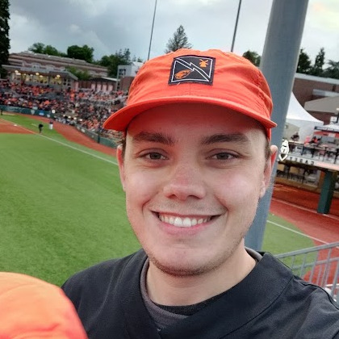

- CFBMax
Sites:
Maxime Desmet Vanden Stock
I am a young software engineer with a passion for machine learning and artificial intelligence. I graduated with a B.S. in Computer Science from Oregon State University, with a focus in Artificial Intelligence.
My experience includes developing and implementing AI and machine learning solutions using programming languages such as Python, C/C++, and Javascript, as well as popular AI and machine learning frameworks like TensorFlow and PyTorch.
In my free time, I enjoy sports analytics and amateur radio. I have also developed several projects, including CFBmax, a college football analytics website, and ALeRT, a classroom polling application. I am a full-time Linux user and have experience running and maintaining web servers.
I am eager to work with a team of experts in the field and continue to learn and grow as a software developer. I believe that my skills, passion, and experience make me a valuable asset to any team.